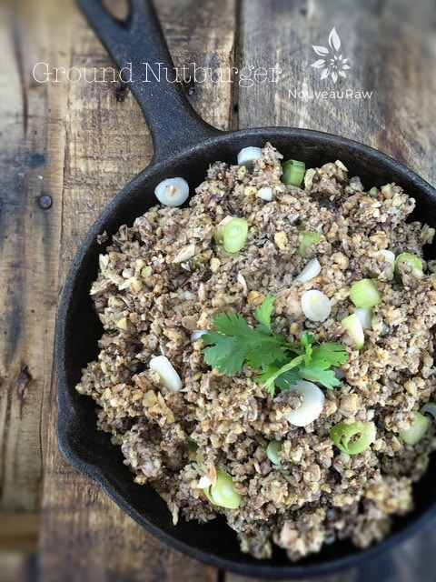

Mushroom Gravy over Marinated Veggies and “Riced” Cauliflower

I struggled to name this recipe… it’s not like anything I have ever had in my aging years. So how do you name a recipe, so it entices others to try it when it is made up of four components? I must have sat for 10 minutes on the couch, rearranging the names of these recipes over and over. I just about gave up and named it “Stuff”!
Have you had a “stuff” dish before? I have. My dad was known to create “stuff” nightly, ah my culinary hero. He could open the fridge, rummage around for two minutes, withdraw with an armful of goodies and in 30 minutes, he would spread out a feast on the table. O.M.G… he was the male twin of Rachel Ray before her time!
I must have looked in that fridge 20 times prior and never saw such foods in there… “How does he do that,” I would wonder. As we sat down around the table I would ask what it was…. dad always replied, “Stuff!” Heads dropped, forks clanked against the plates, and in silence, we scarfed down our “stuff.”
This recipe mashup is loaded with incredible textures and a wide variety of flavors that all compliment each other. This is great served at room temperature or warmed in the dehydrator.
Recipe mashup:
Preparation:
- In single serving dishes layer all the components; starting from the bottom – add a hefty layer of cauliflower “rice,” followed by a substantial amount of grilled veggies, smoother with some gravy and top with ground nutburger!
- To warm, slide the dish(s) in the dehydrator and warm at 115 degrees (F) for 1-2 hours. Enjoy!
Savory Seeded Cauliflower “Rice.”

Marinated “Grilled” Vegetable Mushrooms

Ground Nutburger

Raw Mushroom Gravy

© AmieSue.com